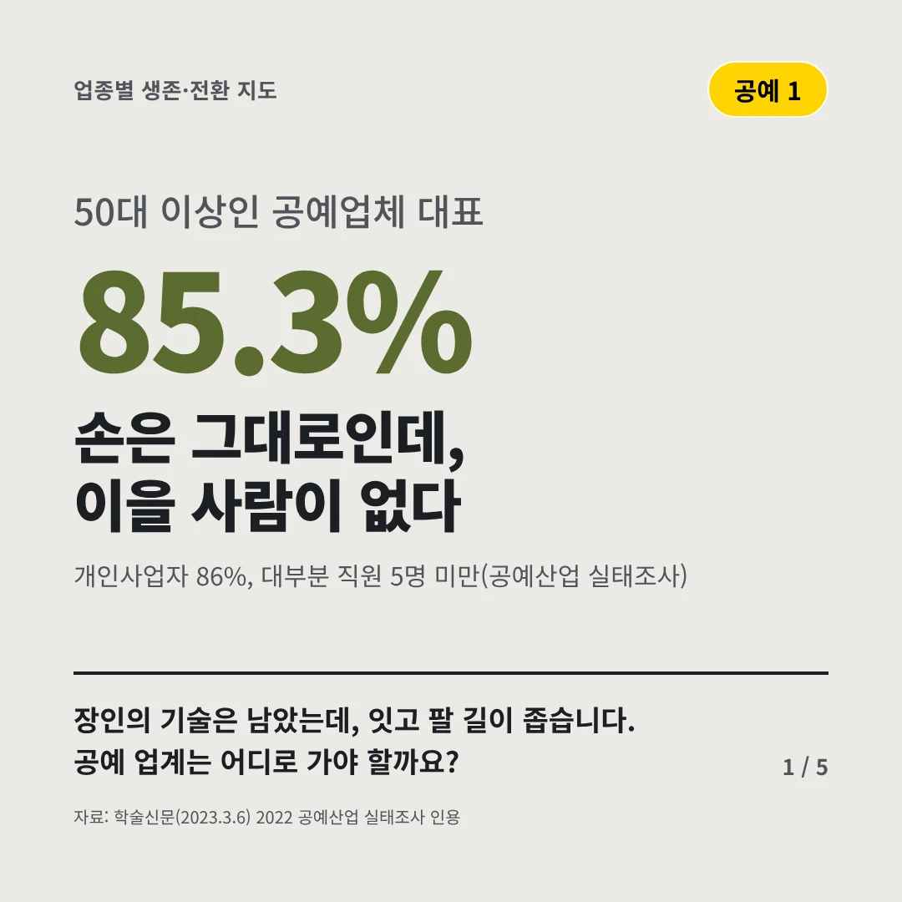
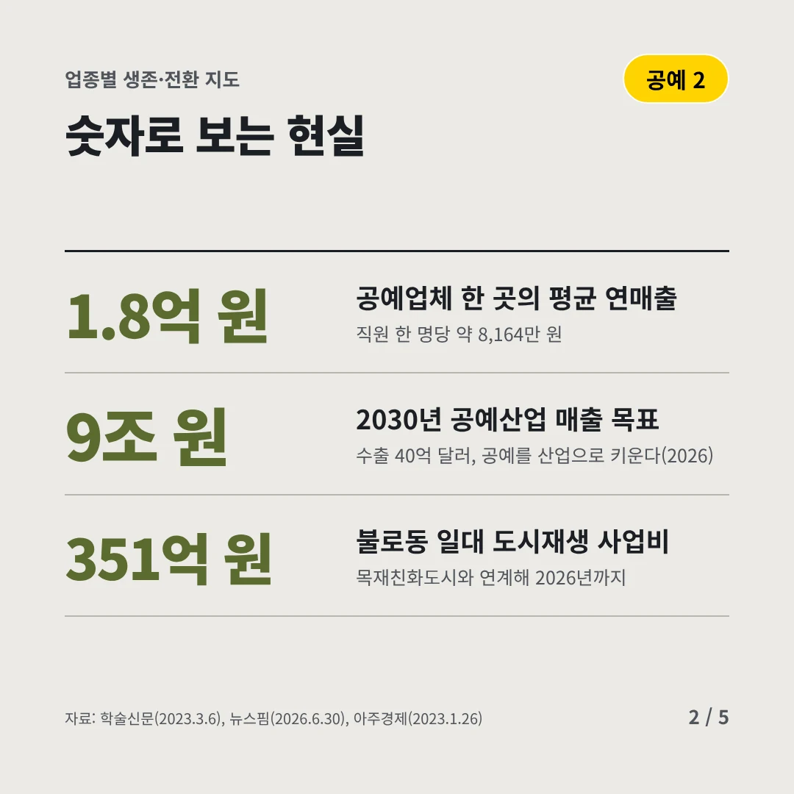
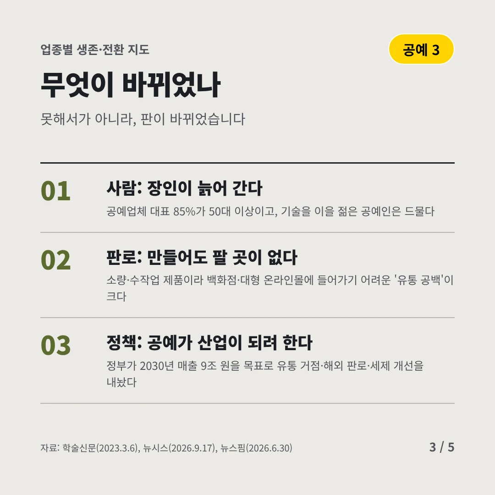
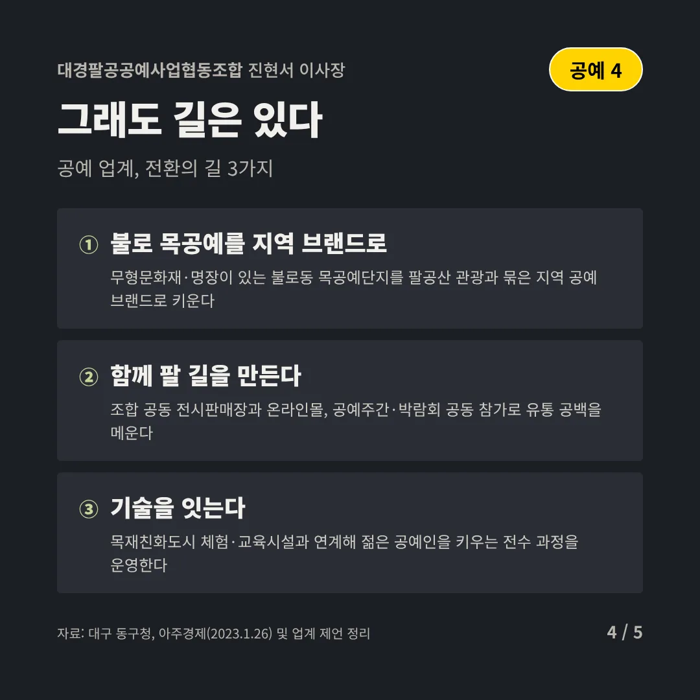
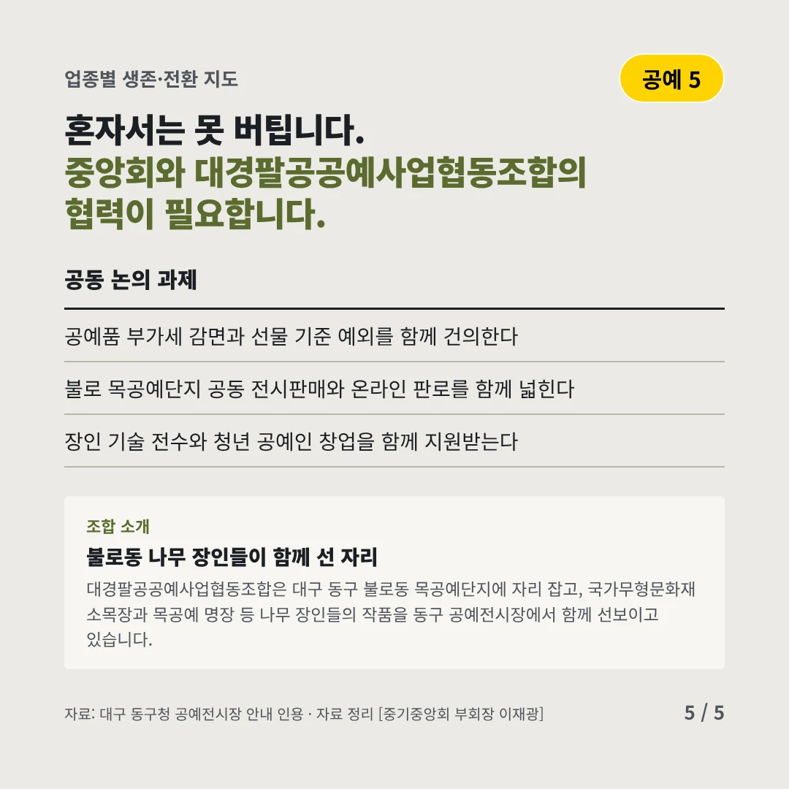
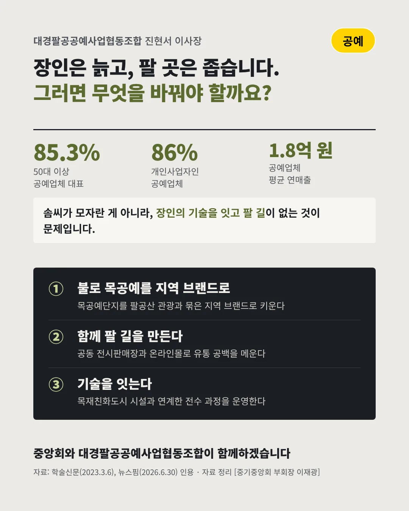

대경팔공공예사업협동조합
손은 그대로인데, 이을 사람이 없다
85.3% 50대 이상인 공예업체 대표






장인의 기술은 남았는데, 잇고 팔 길이 좁습니다. 공예 업계는 어디로 가야 할까요?
숫자로 보는 현실
- 1.8억 원공예업체 한 곳의 평균 연매출직원 한 명당 약 8,164만 원
- 9조 원2030년 공예산업 매출 목표수출 40억 달러, 공예를 산업으로 키운다(2026)
- 351억 원불로동 일대 도시재생 사업비목재친화도시와 연계해 2026년까지
무엇이 바뀌었나
- 사람: 장인이 늙어 간다공예업체 대표 85%가 50대 이상이고, 기술을 이을 젊은 공예인은 드물다
- 판로: 만들어도 팔 곳이 없다소량·수작업 제품이라 백화점·대형 온라인몰에 들어가기 어려운 '유통 공백'이 크다
- 정책: 공예가 산업이 되려 한다정부가 2030년 매출 9조 원을 목표로 유통 거점·해외 판로·세제 개선을 내놨다
그래도 길은 있다
- 불로 목공예를 지역 브랜드로무형문화재·명장이 있는 불로동 목공예단지를 팔공산 관광과 묶은 지역 공예 브랜드로 키운다
- 함께 팔 길을 만든다조합 공동 전시판매장과 온라인몰, 공예주간·박람회 공동 참가로 유통 공백을 메운다
- 기술을 잇는다목재친화도시 체험·교육시설과 연계해 젊은 공예인을 키우는 전수 과정을 운영한다
한 장 요약

조합 소개
대경팔공공예사업협동조합은 대구 동구 불로동 목공예단지에 자리 잡고, 국가무형문화재 소목장과 목공예 명장 등 나무 장인들의 작품을 동구 공예전시장에서 함께 선보이고 있습니다.
자료: 학술신문(2023.3.6), 뉴스핌(2026.6.30), 아주경제(2023.1.26), 뉴시스(2026.9.17), 대구 동구청